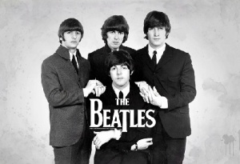

Содержание
The Beatles
Yesterday
All my troubles seemed so far away,
Now it looks as though they're here to stay.
Oh, I believe in yesterday.
Начав с подражания классикам американского рок-н-ролла 1950-х годов, The Beatles пришли к собственному стилю и звучанию. The Beatles оказали значительное влияние на рок-музыку и признаются специалистами одной из наиболее успешных групп XX века, как в творческом, так и в коммерческом смысле. Многие известные рок-музыканты признают, что стали таковыми под влиянием песен The Beatles. С момента выпуска сингла «Please Please Me / Ask Me Why» в 1963 году группа начала восхождение к успеху, породив своим творчеством глобальное явление — битломанию. Четвёрка стала первой британской группой, пластинки которой пластинки которой завоевали популярность и первые места в чартах США, и с неё началось всемирное признание британских коллективов, а также «ливерпульского» (Merseybeat) звучания рок-музыки. Музыкантам группы и их продюсеру и звукорежиссёру Джорджу Мартину принадлежат новаторские разработки в области звукозаписи, комбинирования различных стилей, включая симфоническую и психоделическую музыку, а также съёмок видеоклипов.

Альбомы
- 1963 Please Please Me Студийный альбом
- 1963 With The Beatles Студийный альбом
- 1964 A Hard Day’s Night Студийный альбом; саундтрек к одноимённому фильму
- 1964 Beatles for Sale Студийный альбом
- 1965 Help! Студийный альбом; саундтрек к одноимённому фильму
- 1965 Rubber Soul Студийный альбом
- 1966 Revolver Студийный альбом
- 1967 Sgt. Pepper’s Lonely Hearts Club Band Студийный альбом
- 1967 Magical Mystery Tour Студийный мини-альбом, звуковая дорожка к одноимённому фильму
- 1968 The Beatles Студийный альбом (2 пластинки), известен также как «White Album» («Белый альбом»)
- 1969 Yellow Submarine Студийный альбом, саундтрек к одноимённому фильму
- 1969 Abbey Road Студийный альбом
- 1970 Let It Be Студийный альбом, саундтрек к одноимённому фильму
- 1963 Please Please Me Студийный альбом
- 1963 With The Beatles Студийный альбом
- 1964 A Hard Day’s Night Студийный альбом; саундтрек к одноимённому фильму
- 1964 Beatles for Sale Студийный альбом
- 1965 Help! Студийный альбом; саундтрек к одноимённому фильму
- 1965 Rubber Soul Студийный альбом
- 1966 Revolver Студийный альбом
- 1967 Sgt. Pepper’s Lonely Hearts Club Band Студийный альбом
- 1967 Magical Mystery Tour Студийный мини-альбом, звуковая дорожка к одноимённому фильму
- 1968 The Beatles Студийный альбом (2 пластинки), известен также как «White Album» («Белый альбом»)
- 1969 Yellow Submarine Студийный альбом, саундтрек к одноимённому фильму
- 1969 Abbey Road Студийный альбом
- 1970 Let It Be Студийный альбом, саундтрек к одноимённому фильму